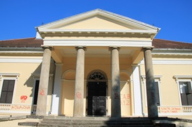
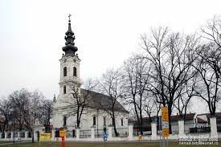
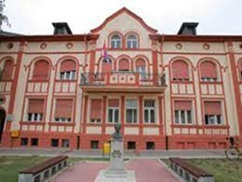
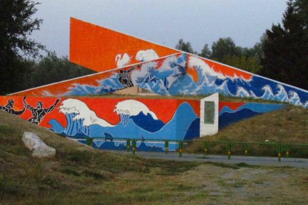

Бачка Паланка је средиште истоимене општине која обухвата 14 насеља и својим већим делом налази се у Бачкој, на левој обали Дунава. Два насеља, Нештин и Визић, смештена су на обронцима Фрушке горе, у Срему на десној обали Дунава. По својој површини од 580 км2 и по броју становника 55.000 спада у веће општине у Војводини.
Изузетно повољан природно-географски положај, природне вредности, културна добра и разне манифестације чине ову општину веома привлачним за посетиоце.
Најзначајнији природни ресурси су:
Од природних добара наше општине треба поменути:
Културна добра општине:



Оно по чему је Бачка Паланка позната свакако је гастрономска понуда рибљих специјалитета који, уз добар звук војвођанских тамбураша могу да се пробају на неколико чарди: чарда „Шаран“ у Челареву, „Калош чарда“,“Флорида“, „Дунав чарда“ и „Чарда код Шике“.
У граду и околини постоји неколико објеката погодних за смештај туриста а најзначајнии су: хотел „Фонтана“, ”, хостел “Агровојводина”, хотел “Вила Гранде”, ресторан с преноћиштем “Идила” и “Идила плус”, ресторан с преноћиштем “Олимп-Централ”, ресторан с коначиштем “Полој”, одмаралиште “Багремара” , сеоско-туристичко домаћинство “Гњездо” и у Нештину куће за одмор “Скелица” и „Ивана“, апартмане “Hemingway” и“ Casa Castellum” и сеоска – туристичка домаћинства “Gaston Wine“ и „Sinkerek“.
БАГРЕМАРА – највећа шумска целина у околини града, представља специјални резерват природе Налази се северно од града са десне стране пута Бачка Паланка-Оџаци. Скоро 100% површине је покривено багремом са мало црног ораха и хаста лужњака. Багремара је остатак некад распрострањених природних низијских шума у Подунављу и заузима површину од 388 хектара.
Оно по чему је јединствена јесте биљка кукурјак. Оведе је забележено и око 70 врста птица од којих су 30 гнездарице-ласте, гугутке, кобац, кукавица, јастреб… За посетиоце је важно напоменути да је кретање огранчено и да у ту сврху постоји 2км пешацких стаза, постављене су и инфо табле, столови и клупе… Такође посттоји и одмаралиште Црвени крст погодно за децу школског узраста, бициклисте, извиђаче и спортисте
ТИКВАРА – најатрактивније језеро у Бачкој Паланци. Налази се између Бачке Паланке на северу и Дунава на југу и представља парк природе 3. категорије површине 554 ха. Представља мртвају и настала је услед високог водостаја Дунава и ниског приобаља. Име је добила по баркама које су служиле за чување свеже рибе за време 2. светског рата. Биле су дуге 10м и имале су избушене даске где је вода слободно циркулисала и где се чувала риба намењена даљој продаји.
Тиквара је мрестилисте дунавских риба а представља највећи зимовник беле рибе. Дубина језера је од 2-3м а има делова где достиже и 5м. Површина се мења и заиси од водостаја Дунава.
Оно што је важно јесте да је језеро међународни центар за спортове на води. И главна асоцијација јесте кајак и познати кајакаш Милан Јанић – Југословенски репрезентативац у кајаку.
Река Дунав кроз општину Бачка Паланка тече у дужини од 35км и природна је граница са Хрватском са којом је спаја мост 25. мај. Мост је отворен 1974.године и свечану врпцу пресекао је друг Тито. Дуг је 725м и за време бомбардовања 1999. оштећен је али је поново пуштен у саобраћај 2002. године.
Велики проблем у прошлости биле су поплаве Дунава. Највећа је била 1965. године када је вода 3 месца угрожавала паланачку равницу. У одбрани од поплава од Бездана до Новог Сада учествовало је 250.000 људи. Тада је на Тиквари изграђен насип о чему сведочи и споменик.

Дунав је својим каналима и рукавцима створио ритове и баре у свом приобаљу. Једна од њих је и Цврцина бара-мочвара која никад не пресушује, која се налази са десне стране. Ту су и отворени терени за фудбал, кошарку, тенис…шеталиште, плажа и Дунав чарда. Праву атракцију поготово за најмлађе посетиоце парка предсављају лабудови.
Са леве стране налазе се мочварни чемпреси који представљају природни споменик, СРЦ Тиквара-хала капацитета од 2.000 посетилаца где се одржавају спортксе и културне-забавне манифестације као и градска плажа купалиште Штранд.
Сви су чули за Челаревско Лав пиво, Нектар сокове и фабрику Таркет али и за Специјални резерват природе Карађордјево са Титовом вилом, ергелом и ловиштем, затим о барокном Дворцу Дунђерских у Челареву из 19. века, Сремску кућу у Нештину која представља бисер српске архитектуре из 18. века.